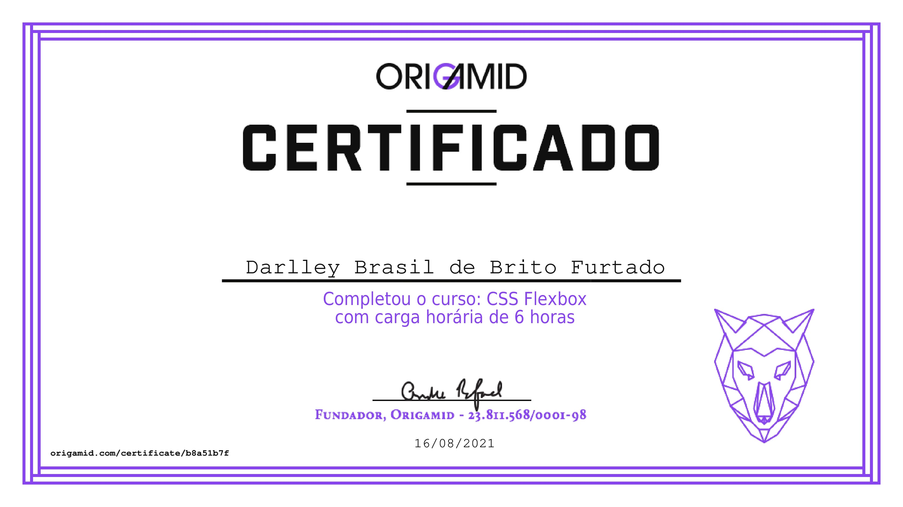
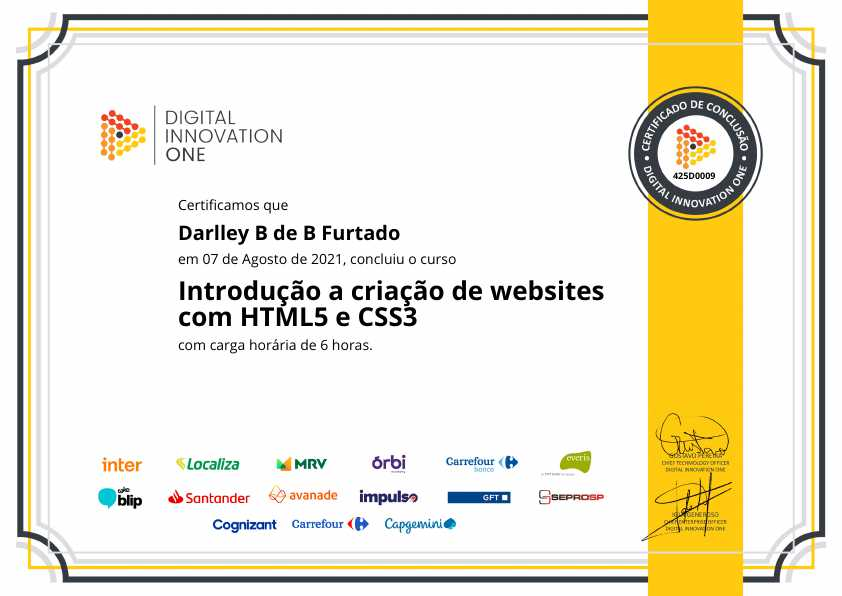
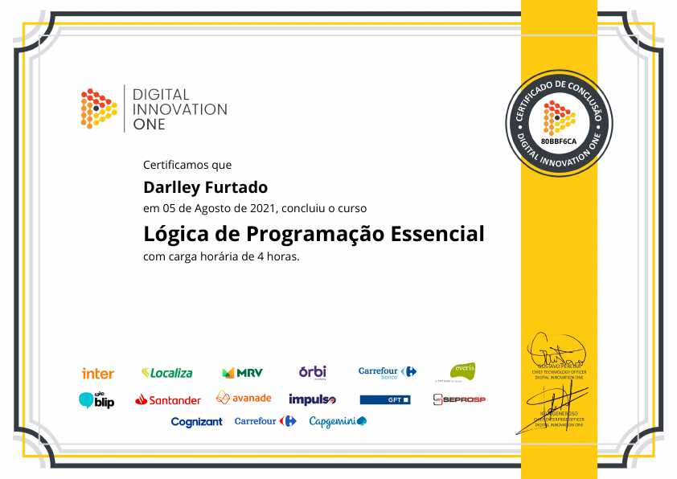
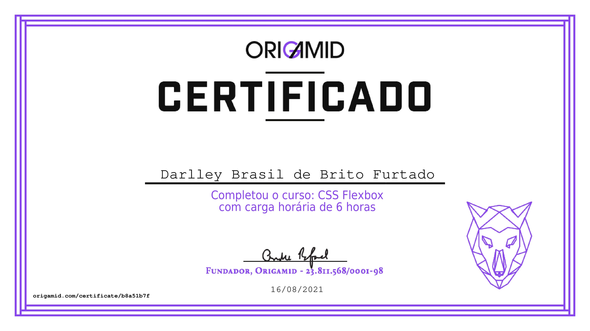
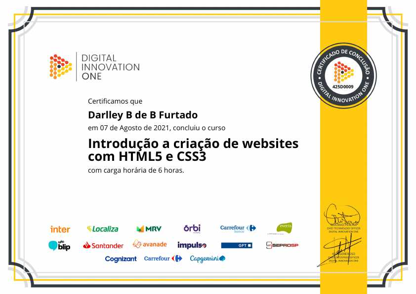
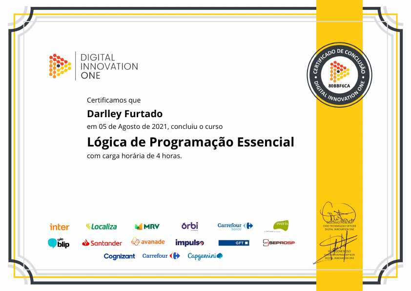
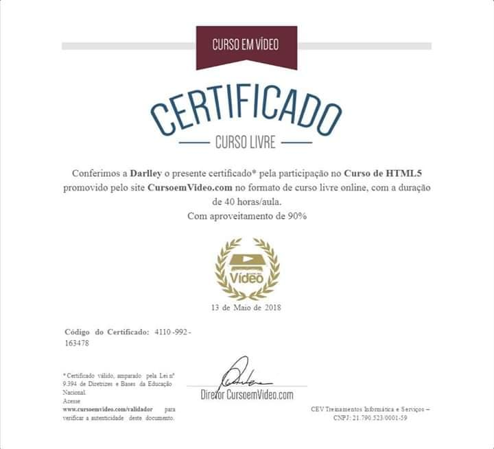
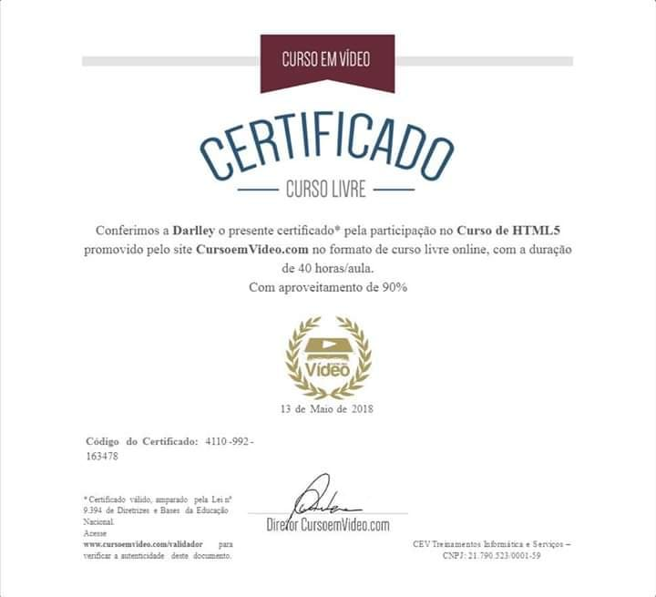

CONHECIMENTOS
E HABILIDADES
CURRÍCULO
Brasileiro, solteiro, 23 anos
Rua Acrópole, 1783 - Danúbio Azul
Campo Grande / MS - 79036-030
Contato: (67) 99332-8678
E-mail: darlleybrito@gmail.com
GitHub: @Darlley
Objetivos
Busco experiência profissional, e para me manter estável viso desenvolver minhas competências técnicas atuando de forma responsável, aplicando meus conhecimentos para a realização das atividades a mim designadas.
Experiência Profissional
- Rino3 Marketing Digital
Cargo: Estagiário.
Período: 2020-2020 - Procuradoria-Geral da Fazenda Nacional
Cargo: Estagiário.
Período: 2016-2016. - Atacadão
Cargo: Empacotador.
Período: 2015-2015.
Formação Acadêmica
Tecnologia em Análise e Desenvolvimento de Sistemas (Noturno)
Universidade Católica Dom Bosco(UCDB): 3 anos, 4º Semestre (trancado).
Curso Profissionalizantes & Habilidades
Curso de Formação Básica para Prestação de Serviços
Instituto Mirim de Campo Grande (IMCG): 1 ano, concluído em 2013.
As habilidades que tenho são mais do Front-End e já estagiei como desenvolvedor back-end (WordPress):
- Git
- GitHub
- HTML5
- CSS3
- JavaScript
- Bootstrap
- NPM
- Gulp
- SCSS/Sass
- WordPress
- CPanel
- PHP
- Java
Descrição das Habilidades
Tenho uma conta no GitHub (inclusive, este portfólio esta hospedado nela) e sei fazer commits e inicializar repositórios utilizando o Git.
Sei utilizar e estruturar as tags semânticas do HTML5.
Tenho conhecimento intermediário em CSS3 (tenho mais facilidade para construir layouts com Flexbox, embora não tenha um conhecimento avançado nele).
Ja fiz cursos de lógica de programação e manipulação da DOM utilizando JavaScript (e o básico de ES).
Sei iniciar um projeto com NPM para poder compilar SASS (proprietário ou o do Bootstrap) utilizando o node-sass e o gulp-sass e automatizar as tarefas com Gulp.
Sei converter os códigos estáticos do front em arquivos PHP e com o plugin Advanced Custom Fields para criar um tema do WordPress e enviar os arquivos para a hospedagem (CPanel).
Por fim, também sei o básico de lógica de programação e programação orientada a objetos com Java.
Certificações

 







 
